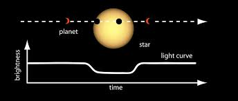

La zona habitable es la region alrededor de una estrella donde un planeta podria mantener agua liquida en su superficie bajo condiciones atmosfericas adecuadas.
Los modelos climaticos distinguen entre limites conservadores, basados en Venus y Marte, y limites optimistas que consideran retroalimentaciones atmosfericas mas amplias.
Numerosos exoplanetas han sido detectados dentro de la zona habitable de sus estrellas anfitrionas, aunque su habitabilidad real depende de multiples factores geofisicos y atmosfericos.
